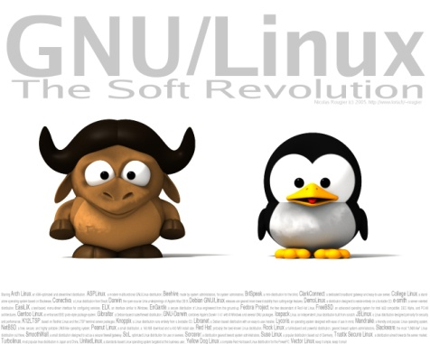
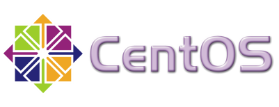
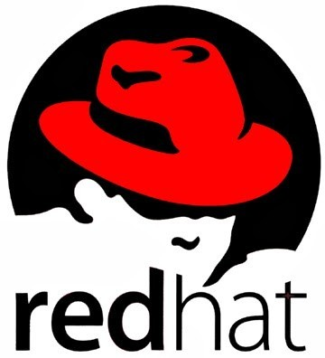

Historia de linux
Breve introduccion
En 1992 habían solo 100 personas trabajando en el desarrollo Kernel de Linux, pero en el 2010 ya eran 1000 personas los que trabajaban en el. Estos permitieron que lo que eran 250.000 líneas de código (1995) pasaran a ser 14.000.000 (2.010). Estos. Mas datos y curiosidades se encuentran en este trabajo, donde explicamos cosas sobre Linux, y todo lo que le rodea, y permite ver como una idea se puede convertir en algo muy grande.
Origen de linux
Predecesores:
La historia de Linux comenzó mucho antes de lo que la mayoría de gente piensa, ya que en 1969, Ken Thompson, de AT&T Bell Laboratories, desarrolló el sistema operativo Unix, adaptándolo a las necesidades La historia de Linux comenzó mucho antes de lo que la mayoría de gente piensa, ya que en 1969, Ken Thompson, de AT&T Bell Laboratories, desarrolló el sistema operativo Unix, adaptándolo a las necesidades de un entorno de investigación, sin saber la importancia que llegaría a tener su trabajo. Un año después Dennis Ritchie (creador del lenguaje de programación C), colaboró con Ken Thompson para pasar el código del sistema Unix a C. Lo que convierto a Unix en un sistema operativo transportable. Unix creció gradualmente hasta convertirse en un producto de software estándar, distribuido por muchos vendedores tales como Novell e IBM. Sus primeras versiones fueron distribuidas de forma gratuita a los departamentos científicos de informática de muchas universidades de renombre. En 1972, los laboratorios Bell empezaron a emitir versiones oficiales de Unix y a otorgar licencias del sistema a distintos usuarios. En 1975, Berkeley lanzó su propia versión de Unix (BSD). Esta versión de Unix se convirtió en la principal competidora de la versión de los laboratorios Bell de ATT&T, pero no era la única ya que en 1980, Microsoft desarrolló una versión de Unix para PC llamada Xenix. En 1991 esta organización desarrolló el SistemaV versión4, que incorporaba casi todas las características que se encuentran en el SistemaV versión3, BSDversión4.3, SunOS y Xenix. Como respuesta a esta nueva versión, varias compañías, tales como IBM y Hewlett Packard, establecieron la Open Software Foundation (OSF) para crear su propia versión estándar del Unix.
Debido a la proliferación de versiones de Unix en las décadas anteriores, el Instituto de Ingenieros
Eléctricos y Electrónicos (IIEE) desarrollo un estándar del Unix independiente Debido a la proliferación
de versiones de Unix en las décadas anteriores, el Instituto de Ingenieros Eléctricos y Electrónicos
(IIEE) desarrollo un estándar del Unix independiente para el American National Institute (ANSI). Este
nuevo estándar ANSI del Unix se llama Portable Operating System Interface for Computer Environments
(POSIX). Este estándar define una norma universal a la cual se deben adherir todas las versiones de
Unix.
En esa época, los estudiantes utilizaban un programa llamado Minix, que incorporaba diferentes
características de Unix. Minix fue creado por el profesor Andrew Tannenbaum. Director del Departamento
de Sistemas de la Universidad de Vrije, Amsterdam.
Profesor de Arquitectura de Ordenadores y Sistemas Operativos. Licenciado en el MIT, y doctorado en la
Universidad de Berkeley, California. En 1992 participó debate con Linus sobre la idea de este utilizar
un núcleo monolítico en vez de los basados en un micro núcleo que Tanenbaum creía que serían la base de
los sistemas operativos futuros.
Linux
Era el año 1991 y Linus Torvalds ,que en aquel entonces era un estudiante de informática de la
Universidad de Helsinki, empezó a programar las primeras líneas de código de un sistema
operativo(finalmente llamado LINUX ) como una afición y sin poderse imaginar la gran repercusión que
traería.
Hubo una primera versión no oficial de Linux 0.01, pero esta solo incluía el comienzo del núcleo, estaba
escrita en lenguaje ensamblador y asumía que uno tenía acceso a un sistema Minix para su
compilación.
El 5 de octubre de 1991, Linus anuncio la primera versión oficial de Linux (versión 0.02). Con esta
versión Linus pudo ejecutar Bash (GNU Bourne Again Shell) y gcc (El compilador GNU de C).Desde aquel
entonces se han hecho muchísimas versiones con ayuda de programadores de todo el mundo.
Linux es un sistema operativo compatible con Unix, sus dos características principales y que los
diferencian del resto de los sistemas operativos que encontramos en el mercado son:
1. Es software libre, esto significa que no tenemos que pagar por el uso del mismo.
2. El sistema viene acompañado del código fuente (el sistema lo forman el núcleo del sistema (kernel)
mas un gran numero de librerías que hacen posible su utilización).
Las plataformas en las que en un principio se puede utilizar Linux son: Pentium, Pentium Pro, Pentium
II/III/IV, Amiga y Atari, también existen versiones para su utilización en otras plataformas, como
Alpha, ARM, MIPS, PowerPC y SPARC.
En los últimos tiempos, ciertas casas de software comercial han empezado a distribuir sus productos para
Linux y la presencia del mismo en empresas aumenta rápidamente por la excelente relación calidad-precio
que se consigue con Linux.
Tux

Tux es el nombre de la mascota oficial de Linux. Creado por Larry Ewing en 1996, es un pequeño pingüino de aspecto risueño y cómico. La idea de que la mascota de kernel Linux fuera un pingüino provino del mismo Linus Torvalds, creador de kernel Linux. Existen dos versiones sobre el origen de su nombre: 1. Los pingüinos parecen vestir un esmoquin (que en inglés es tuxedo max, abreviado tux). 2. Las letras que componen Tux provienen de las palabras Torvalds y Unix. Hay quien dice que Tux era el nombre de un peluche que tenia Linus que era un pingüino llamado Tux. El logotipo se puede usar y modificar sin restricciones, siempre que se reconozca la autoría de Larry Ewing, ya que es su trabajo y se debe reconocer su autoría tal y como se indica en su página. Lo que ha dado lugar a una gran cantidad de llamativos diseños, a continuación se pueden ver algunos ejemplos:
Linus torvalds

Nació el 28 de diciembre de 1969 en Finlandia, es un ingeniero de software conocido por iniciar y mantener el desarrollo del «kernel» de Linux, basándose en el sistema operativo libre Minix y en algunas herramientas, varias utilidades y los compiladores desarrollados por el proyecto GNU. En la actualidad es responsable de la coordinación del proyecto.
Su vida
Con tan solo 11 años y la ayuda de su abuelo que era un matemático y estadístico de la época, el cual al comprarse un Commodore enseño al joven Linus a manejarlo. En 1988 entro en la Universidad de Helsinki en donde aprendió sobre las ciencias de la computación y conoció a Andew S.Tanenbaum el cual ese mismo año creo el sistema operativo Minix. Aprendió a programar en C y después de varios años adquiriendo experiencia y tomar prestadas algunas ideas, creó en 1991 el primer Linux capaz de ejecutar BASH y disponer del compilador GCC. Le llamo Linux, debido a su apodo de la universidad. Un año más tarde Linux adopto GPL, una licencia que le añadía libertades para poder manipular y redistribuir su código de manera totalmente libre, lo que ha permitido que Linux se mantenga estable hasta nuestros días. Después de estar diez años estudiando y e investigando, entro a trabajar en Transmeta, una empresa dedicada a la fabricación de microprocesadores para portátiles; más tarde decidió abandonarla para poder dedicarse completamente al sueño que había creado, el desarrollo del kernel Linux. En la actualidad trabaja en los laboratorios Open Source Development Labs en Oregón, con la intención de seguir desarrollando su pasión, el kernel de Linux.
En la actualidad trabaja en los laboratorios Open Source Development Labs en Oregón, con la intención de seguir desarrollando su pasión, el kernel de Linux. Torvalds posee la marca registrada «Linux» y supervisa el uso de la marca a través de la organización sin ánimo de lucro Linux International, que se encarga de difundir por el mundo los beneficios del S.O. A pesar de todo, Linus, con sus 36 años, está felizmente casado con Tove y actualmente vive en Portland con sus tres hijas: Patricia, Daniela y Celeste, un lugar mucho más tranquilo para vivir con su familia. Algunas de las curiosidades que conocemos de Linus Torvalds es una persona como otra cualquiera y a la que le encanta la cerveza, conducir, y estar disfrutando con su familia. En 2001 lanzo su primer y único libro, su propio autobiografía, titulada “Just For Fun: The Story of an Accidental Revolutionary”, que traducido al castellano es muy curioso y significa: Sólo por diversión: la historia de un revolucionario accidental.
Creacion de linux
Los motivos que llevaron a este genio a desarrollar su propio sistema operativo fueron varias. Normalmente, Linus utilizaba un computador que usaba para tener acceso por línea telefónica a la red informática de su Universidad, pero debido a que este utilizaba Minix y este no era de su agrado, decidió crear uno él mismo. En los primeros intentos hizo un programa que arrancaba desde un disquete, y consiguió arrancar el computador y ejecutar dos procesos que mostraban la cadena de caracteres “AAAAABBBBB”. Uno lo utilizaría para leer desde el módem y escribir en la pantalla, mientras que el otro escribiría al módem y leería desde el teclado. El otro motivo que le llevo a el desarrollo de su S.O fue, la necesidad que tenia de poder descargar y subir archivos de su universidad, pero para implementar esta funcionalidad en el software, era necesario crear un controlador de disco. Así que después de un trabajo continuo y duro, creó un controlador compatible con el sistema de archivos de Minix. Podríamos decir que por error decidió crear Linux partiendo desde cero al darse cuenta, de que estaba creando algo más que un simple emulador de terminal. En un principio Linux se iba a llamar Freax (free+ freak + x), aunque después se le siguió conociendo como lo conocemos hoy en día. Después de decidir seguir desarrollando su sistema para construir un remplazo de Minix, sube al servidor de su universidad Linux con 10.000 líneas de código. A partir de ese momento Linux empezó a evolucionar rápidamente y hasta día de hoy no ha dejado de avanzar, ganando terreno a otros sistemas operativos que no son de código abierto. Linux hoy en día sigue ganando adeptos en todas las partes del mundo debido a ser gratuito y cada vez más personas anónimas contribuyen a su desarrollo y a convertirse en el sistema más estable y seguro. La frase que utilizo al subir Linux al servidor fue: «Si suspiras al recordar aquellos días cuando los hombres eran hombres y escribían sus propios drivers. Si te encuentras sin ningún proyecto interesante y te gustaría tener un verdadero sistema operativo que pudieras modificar a tu gusto, si te resulta frustrante tener solo Minix. Entonces este artículo es para ti». Lo que la gente desconoce es que Linus Torvalds solo escribe el 2% del sistema operativo Linux, es decir unas 50.000 líneas de código. El resto, se encarga de escribirlo los millones de personas que por vocación deciden mejorar este sistema, aunque Linus se encarga personalmente de supervisarlo. Torvalds siempre se ha mostrado ingenioso en sus respuestas sobre su rival, Microsoft. En una de sus últimas declaraciones explicaba que “el caso antimonopolio contra Microsoft no ha representado una gran diferencia o una ayuda para Linux, pero lo que sí ha conseguido es que la gente compruebe que Microsoft no representa el sueño americano de la informática; que tiene muchos huecos por cubrir, muchas cosas que mejorar y un grave problema de marketing. Probablemente esto nos ha abierto muchas puertas”. Otra de las cualidades a destacar de Torvalds quizá es que sea uno de los pocos miembros del movimiento OPENSOURCE que se preocupa más por el código que por las leyes.

-Richard Stallman-
Richard Mathew Stallman es un activista del software libre y programador. Sus mayores logros como programador son, entre otros, el editor de texto Emacs, el compilador GCC y el depurador GDB y como activista destaca la referencia moral, política y legal que supone para el movimiento del software libre. Es también inventor del concepto “copyleft”, método para licenciar software sin privatización alguna.
Primeros años
En 1971, Stallman se convirtió en un hacker del Laboratorio de Inteligencia Artificial (IAL) del Instituto Tecnológico de Massachusetts (MIT). En los años 80, la cultura hacker que constituía la vida de Stallman empezó a disolverse bajo la presión de la comercialización en la industria del software. En particular, otros hackers del laboratorio de IA fundaron la compañía Symbolics, la cual intentaba activamente remplazar el software libre del Laboratorio con su propio software privado. Entre 1983 y 1985, Stallman duplicó por sí mismo los esfuerzos de los programadores de Symbolics para impedir que adquirieran un monopolio sobre los ordenadores del laboratorio. Por ese entonces, sin embargo, él era el último de su generación de hackers en el laboratorio.
fundacion de GNU y creacion de GNU/Linux
Se le pidió que firmara un acuerdo de no divulgación y llevara a cabo otras acciones que él consideró traiciones a sus principios, a raíz de ello, el 27 de septiembre de 1983 Stallman anunció en varios grupos de noticias de ARPANET Y USENET el inicio del proyecto GNU que perseguía crear un sistema operativo completamente libre, para ello dejaría su trabajo en el MIT en febrero de 1984. Al anuncio original siguió, en 1985, la publicación del Manifiesto GNU, en el cual Stallman declaraba sus intenciones y motivaciones para crear una alternativa libre, pero compatible, al sistema operativo Unix, al que denominó GNU, que también quiere decir ñu en inglés (logotipo de GNU). Poco tiempo después fundó la organización no lucrativa Free Software Foundation para coordinar el esfuerzo, empleando a programadores de software libre y proveer de una infraestructura legal al movimiento del software libre. Popularizó el concepto de copyleft, un mecanismo legal que protege los derechos de modificación y redistribución del software libre, fue implementado en la Licencia Pública General GNU en 1989. La mayor parte del sistema GNU, excepto el núcleo, se completó aproximadamente al mismo tiempo, en 1990 hubo miembros del Proyecto GNU que comenzaron a desarrollar un núcleo llamado GNU Hurd. En 1991, un estudiante finlandés llamado Linus Torvalds utilizó las herramientas de desarrollo de GNU para producir el núcleo Linux, completando un sistema GNU completo y operativo, el sistema operativo GNU/Linux.
Repercusiones morales y politicas
Las motivaciones políticas y morales de Richard Stallman lo han convertido en una figura controvertida. Muchos programadores influyentes que se encuentran de acuerdo con el concepto de compartir el código, difieren con las posturas morales, filosofía personal o el lenguaje que utiliza Stallman para describir sus posiciones. Un resultado de estas disputas condujo al establecimiento de una alternativa al movimiento del software libre, el movimiento de código abierto. «Que las empresas tengan especial influencia en la política significa que la democracia está enferma. El propósito de la democracia es asegurarse de que los ricos no tengan una influencia proporcional a su riqueza. Y si tienen más influencia que tú o que yo, eso significa que la democracia está fallando. Las leyes que obtienen de esta forma no tienen autoridad moral, sino la capacidad de hacer daño.» Stallman ha escrito muchos ensayos sobre la libertad del software y desde principios de los noventa ha sido un franco defensor político del movimiento del software libre. Las charlas que ha dado regularmente se titulan “El Proyecto GNU y el movimiento del Software Libre”, “Los Peligros de las Patentes del Software” y “El Copyright y la Comunidad en la edad de las redes informáticas”. Linus Torvalds ha criticado a Stallman por lo que él considera “pensamiento en blanco y negro” y hacer más daño que bien a la comunidad del software libre. La acérrima apuesta de Stallman por el software libre inspire el Virtual Richard M. Stallman (vrms), software que analiza los paquetes instalados en un sistema Debian GNU/Linux e informar de aquellos que son de origen no libre. En 1999 promovió la creación de una enciclopedia libre, la GNUPedia, considerada como un antecedente directo de la Wikipedia, la cual desbancó a la primera.
Actividades recientes
En la actualidad, Stallman se encarga de difundir la ideología GNU en todo el mundo mediante charlas y conferencias. Esto hace que algunos le consideren como un profeta o gurú. Posee un buen nivel de español, y ha dado varias conferencias en español en España, Cuba y otros países latinoamericanos (en Universidades, etc.). En el año 2004 realizó dos conferencias en la Universidad Nacional Autónoma de México (UNAM) en sus facultades de Ciencias e Ingeniería, participando también en el “Congreso Internacional de Software Libre” realizada el mismo año en el mismo país. También ha sido invitado por cadenas de televisión y prensa española en los que se le han hecho entrevistas en castellano. Ha dado conferencias en contra de las patentes de software, entre ellas en España cuando estaba pendiente de aprobarse una polémica ley en favor de las patentes de software en Europa que fue rechazada por mayoría absoluta de los Eurodiputados. En diciembre del 2006, invitado por varias organizaciones involucradas con el software libre, impartió varias conferencias en Ecuador. En una de ellas, realizada en la Universidad Central insistió ante más de dos mil asistentes, que deben asumir una «posición militante» en el uso y difusión del software libre y la lucha contra el monopolio del conocimiento. Su presencia sirvió de motivación para la formalización de los grupos de usuarios en la Asociación de Software Libre del Ecuador.
En el año 2007 Stallman visitó Cuba donde impartió una conferencia en la Universidad de las Ciencias Informáticas (UCI) a teatro lleno de sus seguidores en el movimiento del Software Libre. En octubre de ese año, participó en el CLEI (Conferencia Latinoamericana de Informática), en esta ocasión habló sobre los principios del Software Libre, el GNU, Copyleft entre otros; además recalcó la importancia de la colaboración entre prójimos y la divulgación del conocimiento. Stallman reconoció que hasta hace un tiempo, cuando le preguntaban por qué distribución de GNU/Linux usar, no sabía cual aconsejar, pues todas contenían software privativo, ahora, dice ya puede aconsejar varias en las que todo su software es Software libre.
Tipos de linux
La superioridad de Linux en seguridad, administración de redes, servidores web y otros aspectos frente a cualquiera de Microsoft Windows es incuestionable. Si a esto le sumamos su libre distribución en muchos de los casos, se convierten en algo genial que va ganando adeptos. En general, las distribuciones Linux pueden ser: comerciales o no comerciales. Distribuciones fieles al software libre. Diseñadas para las empresas y el hogar. La diversidad de las distribuciones Linux es debido a cuestiones técnicas, de organización y de puntos de vista diferentes entre usuarios y proveedores. El modo de licenciamiento del software libre permite que cualquier usuario con los conocimientos e interés suficiente pueda adaptar o diseñar una distribución de acuerdo con sus necesidades. De todas las mencionadas anteriormente, las de uso más común son las cuatro primeras que son las que voy a explicar a continuación.
Distribuciones fieles al concepto de software libre
Hay cientos de distribuciones Linux disponibles, pero solo unas cuantas siguen fieles al concepto y a la filosofía de software libre, la filosofía que defiende encarecidamente Richard M. Stallman y que trata de luchar contra la inclusión de cualquier tipo de código propietario en ellas. Ya se ha hablado mucho de estas distribuciones, pero gracias al artículo publicado en UnixCraft podemos hacer un filtro entre todas las que hay y nos quedamos con cinco distribuciones que precisamente siguen esa filosofía “pura” en la que nos olvidamos de la inclusión de cualquier tipo de, por ejemplo, controladores binarios que no incluyen código fuente, conocidos popularmente como binary blobs. Y los mejores son: gNewSense, Dragora, BLAG, Musix y Trisquel. Existen otros muchos, pero estos son los más conocidos.
Linux en la empresa y el hogar
Cuál es la ventaja de utilizar Linux en la empresa: el ahorro en los costes de licencias. Cualquier organización determinada que utilice Linux en su infraestructura informática ahorra mucho dinero en licencias de software. Para esto hay dos tipos de distribuciones Linux; las del tipo empresarial ofrecidas por empresas como Red Hat y Novell (SUSE Enterprise) que si cobran una cuota de licenciamiento, pero no por desarrollo del software, sino por servicios de soporte y mantenimiento. Y también se encuentran las del tipo open, que son 100% gratuitas que se ofrecen con soporte bajo las comunidades de usuarios de dichas distribuciones. Estas últimas se utilizan en la mayoría de hogares con sistemas Linux.
Distribuciones ams itulizadas
Lo que más desconcierta a los usuarios que empiezan en Linux, es la amplia variedad de distribuciones que existen. Estas incorrectamente llamadas “versiones de Linux” son conocidas formalmente como Distribuciones de GNU/LINUX. Según la Wikipedia, “una distribución Linux, o distribución GNU/Linux es un conjunto de aplicaciones o programas reunidos que permiten brindar mejoras para instalar fácilmente un sistema Linux. Son “sabores” de Linux que, en general, se destacan por las herramientas para configuración y sistemas de administración de paquetes de software que instala.” En cualquier distribución de Linux, su parte fundamental es el kernel, con sus bibliotecas y herramientas de muchos proyectos como pueden ser GNU o BSD. Además del núcleo Linux, cada una de ellas incluye software genérico o específico: programas que facilitan la instalación y configuración del sistema, entornos gráficos, paquetes ofimáticos, juegos, programas educativos, servidores web, servidores de correo, servidores FTP, etc. La creación de GNU/Linux se ha convertido en un proceso relativamente fácil. Cada creador ha adoptado un formato de paquetes, un tipo de escritorio (KDE, Gnome, IceWM, etc.), una forma de arrancar el computador (Live, Instalable, USB, etc.), ha realizado una selección de software, ofrece un mejor soporte de localización para un idioma en un mercado específico, y muchas selecciones más, pensando en el usuario al que está orientada la distribución.
Linux CentOS
El creador de CentOS fue Lance Davis. Es una distribución de Linux basada en código fuente libre disponible de Red Hat Enterprise Linux. Cada versión de CentOS es mantenida durante 7 años con actualizaciones de seguridad. Las versiones nuevas son liberadas cada 2 años y actualizadas regularmente para dar soporte al hardware nuevo. La primera versión de CentOS fue lanzada en mayo de 2004 y la última versión estable es la CentOS 6.2, lanzada en diciembre de 2011. CentOS, se utiliza básicamente para la administración de sistemas.
Red hat
Es una distribución Linux creada por Red Hat, que fue una de las más populares en los entornos de usuarios domésticos. La versión 1.0 fue presentada el 3 de noviembre de 1994. Originalmente Red Hat Linux fue desarrollado exclusivamente dentro de Red Hat, con la sola realimentación de informes de usuarios que recuperaban de fallos y contribuciones a los paquetes de software incluidos; y no contribuciones a la distribución como tal. Esto cambió tardíamente en el 2003 cuando Red Hat Linux se fusionó con el Proyecto Fedora Linux orientado a la comunidad de usuarios. El nuevo plan es extraer el código base de Fedora para crear nuevas distribuciones de Red Hat Enterprise Linux. Actualmente la versión gratuita es Fedora. Red Hat Enterprise Linux Desktop Red Hat Enterprise Linux para servidores.
Fedora
Fedora es un sistema operativo para uso doméstico, que se caracteriza por su velocidad. Es desarrollado por una comunidad de usuarios alrededor de todo el mundo. Es gratuito y libre, tanto para utilizarlo como para compartirlo o para conocer su funcionamiento. La versión actual para descargar es: Fedora 16.
Debian
Debian es otra de las distribuciones más utilizadas de Linux. Se está trabajando para ofrecer Debian con otros núcleos, en especial con el Hurd. El Hurd es una colección de servidores que se ejecutan sobre un micronúcleo (como Mach) para implementar las distintas funcionalidades. El Hurd es software libre producido por el proyecto GNU. Debian siempre mantiene al menos tres versiones en mantenimiento activo: estable, en pruebas e inestable. La versión estable actual de Debian es la 6.0, llamada squeeze. Fué publicada originalmente con la versión 6.0.0 el 6 de febrero de 2011 y su última actualización es la versión 6.0.3, publicada el 8 de octubre de 2011. La publicación en pruebas (testing) contiene paquetes que aún no han sido aceptados en la rama estable, pero están a la espera de ello. La principal ventaja de usar esta publicación es que tiene versiones más recientes del software. La publicación inestable llamada sid y es donde tiene lugar el desarrollo activo de Debian. Generalmente, esta publicación es la que usan los desarrolladores y otros que quieren estar a la última.
Ubuntu
Ubuntu es una distribución Linux que ofrece un sistema operativo orientado a ordenadores de escritorio proporcionando también soporte para servidores. Basada en Debian GNU/Linux, Ubuntu se centra en la facilidad de uso, los lanzamientos regulares (cada 6 meses) y la facilidad en la instalación. Ubuntu es patrocinado por Canonical Ltd., una empresa privada fundada y financiada por el empresario sudafricano Mark Shuttleworth. Cabe destacar que Canonical Ltd., ofrece multitud de aplicaciones para descargar. El nombre de la distribución proviene del concepto zulú y xhosa de ubuntu, que significa “humanidad hacia otros” o “yo soy porque nosotros somos”. Ubuntu es un movimiento sudafricano encabezado por el obispo Desmond Tutu, quien ganó el Premio Nobel de la Paz en 1984 por sus luchas en contra del Apartheid en Sudáfrica. El sudafricano Mark Shuttleworth, mecenas del proyecto, se encontraba muy familiarizado con la corriente. Tras ver similitudes entre los ideales de los proyectos GNU, Debian y en general con el movimiento del software libre, decidió aprovechar la ocasión para difundir los ideales de Ubuntu. El eslogan de Ubuntu “Linux para seres humanos” (en inglés “Linux for Human Beings”) resume una de sus metas principales: hacer de Linux un sistema operativo más accesible y fácil de usar.
Historia de ubuntu
El 8 de julio de 2004, Mark Shuttleworth y la empresa Canonical Ltd. anunciaron la creación de la distribución Ubuntu. Ésta tuvo una financiación inicial de 10 millones de dólares (US$). El proyecto nació por iniciativa de algunos programadores de los proyectos Debian, Gnome porque se encontraban decepcionados con la manera de operar del proyecto Debian, la distribución Linux sin ánimo de lucro más popular del mundo. De acuerdo con sus fundadores, Debian era un proyecto demasiado burocrático donde no existían responsabilidades definidas y donde cualquier propuesta interesante se ahogaba en un mar de discusiones. Asimismo, Debian no ponía énfasis en estabilizar el desarrollo de sus versiones de prueba y sólo proporcionaba auditorías de seguridad a su versión estable, la cual era utilizada sólo por una minoría debido a la poca o nula vigencia que poseía en términos de la tecnología Linux actual. Tras formar un grupo multidisciplinario, los programadores decidieron buscar el apoyo económico de Mark Shuttleworth, un emprendedor sudafricano que vendió la empresa Thawte a VeriSign, cuatro años después de fundarla en el garaje de su domicilio, por 575 millones de dólares estadounidenses. Shuttleworth vio con simpatía el proyecto y decidió convertirlo en una iniciativa autosostenible, combinando su experiencia en la creación de nuevas empresas con el talento y la experiencia de los programadores de la plataforma Linux. De esta forma nació la empresa Canonical, la cual se encarga de sostener económicamente el proyecto mediante la comercialización de servicios y soporte técnico a otras empresas. Mientras los programadores armaban el sistema, Shuttleworth aprovechó la ocasión para aplicar una pequeña campaña de mercadotecnia para despertar interés en la distribución sin nombre (en inglés: the no-name-distro). Tras varios meses de trabajo y un breve período de pruebas, la primera versión de Ubuntu (Warty Warthog) fue lanzada el 20 de octubre de 2004.
Lanzamientos
Cada lanzamiento de Ubuntu posee un nombre en clave, como también un número de versión basado en el año y el mes del lanzamiento. Por ejemplo, la versión 5.04 fue lanzada en abril de 2005. Cada versión de Ubuntu es lanzada con seis meses de diferencia con respecto al último lanzamiento, aunque el lanzamiento de la versión 6.06 se demoró más de seis meses, debido a que Canonical Ltd. quería desarrollar una distribución a la que fuera posible dar ayuda técnica durante tres años en el escritorio y cinco años en el servidor. Canonical provee ayuda técnica y actualizaciones de la seguridad para la mayoría de las versiones de Ubuntu durante 18 meses, a partir de la fecha del lanzamiento.
Versiones
Ubuntu: es la versión «original», utiliza el interfaz gráfico por defecto GNOME, es quizás la versión más utilizada y la más recomendable para cualquier tipo de usuario. Kubuntu: una versión de Ubuntu que hace uso del interfaz gráfico KDE por defecto. Edubuntu: una versión orientada a su uso en centros educativos. Utiliza el interfaz gráfico Gnome personalizado y aplicaciones específicas para la enseñanza. Xubuntu: la última versión en aparecer. Es de propósito general (como Ubuntu y Kubuntu), pero hace uso del interfaz gráfico Xfce, que si bien no puede personalizarse tanto como Gnome o KDE, su consumo de recursos es menor y por lo tanto es más rápido para sistemas un poco antiguos.